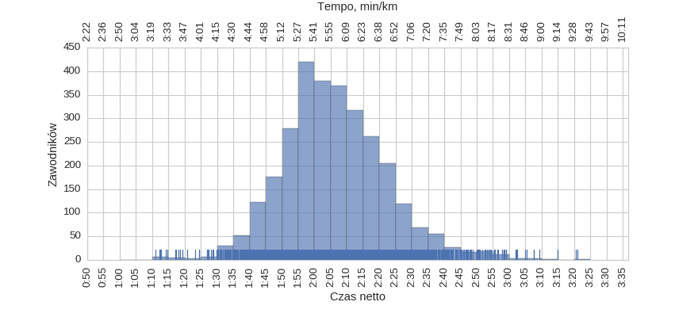
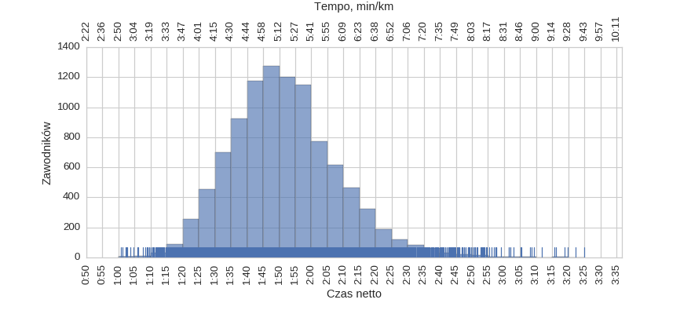
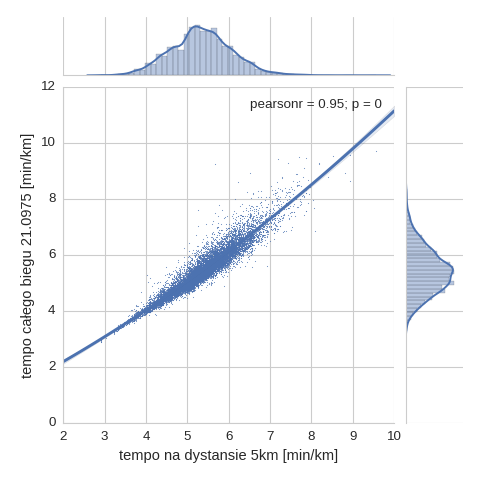
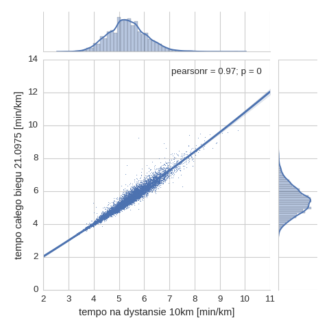
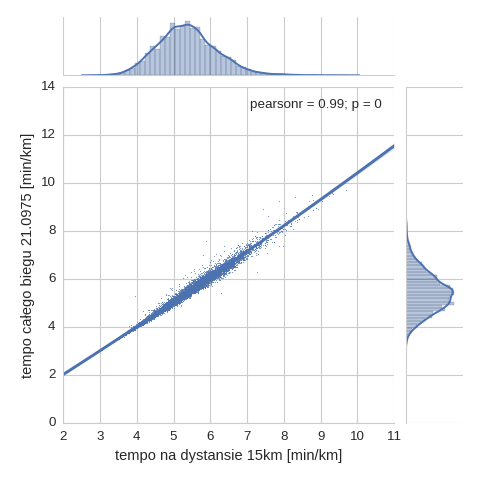
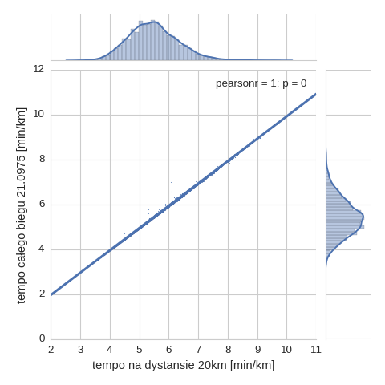
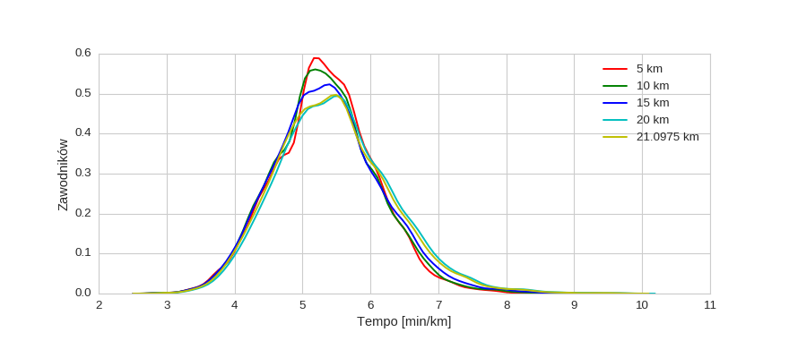
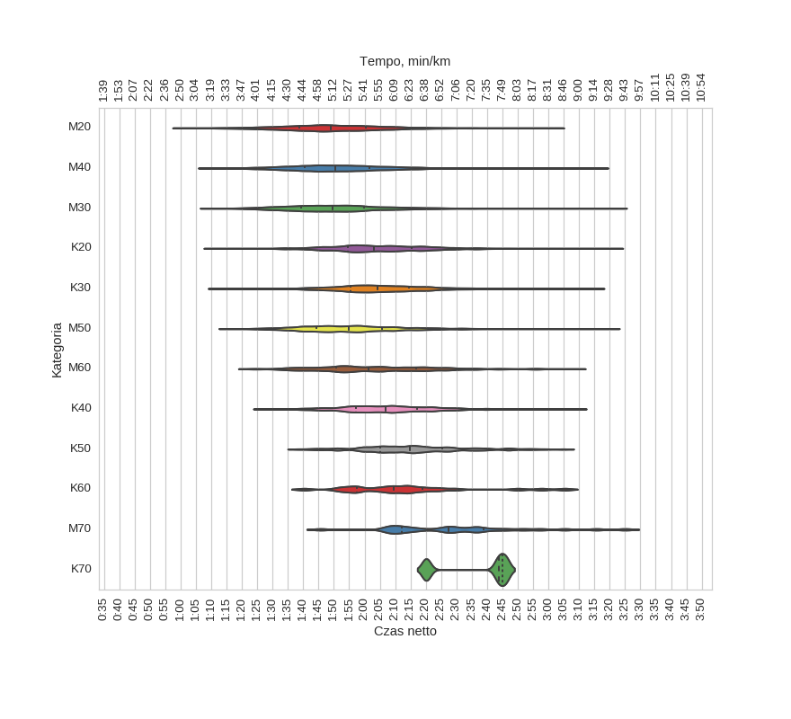

Statystyki biegowe
Statystyki biegowe10 Półmaraton Warszawski (2015)
Histogramy
Klasyfikacja generalna

| mean | std | min | 25% | 50% | 75% | max | |
|---|---|---|---|---|---|---|---|
| czas | 1:54:59 | 0:17:47 | 1:00:52 | 1:42:40 | 1:53:59 | 2:05:57 | 3:24:59 |
kobiety

| mean | std | min | 25% | 50% | 75% | max | |
|---|---|---|---|---|---|---|---|
| czas | 2:06:13 | 0:16:11 | 1:10:54 | 1:55:43 | 2:05:03 | 2:16:05 | 3:20:57 |
mężczyźni

| mean | std | min | 25% | 50% | 75% | max | |
|---|---|---|---|---|---|---|---|
| czas | 1:51:39 | 0:16:51 | 1:00:52 | 1:40:04 | 1:50:15 | 2:01:13 | 3:24:59 |
Korelacje międzyczasów z wynikiem końcowym
Korelacja tempa 5 / 21.0975 km

Korelacja tempa 10 / 21.0975 km

Korelacja tempa 15 / 21.0975 km

Korelacja tempa 20 / 21.0975 km

Histogram tempa na różnych dystansach

Wykresy rybkowe
wg płci
| czas_netto_s | count | |||||||
|---|---|---|---|---|---|---|---|---|
| mean | std | min | 25% | 50% | 75% | max | ||
| plec | ||||||||
| K | 2:06:13 | 0:16:11 | 1:10:54 | 1:55:43 | 2:05:03 | 2:16:05 | 3:20:57 | 2963 |
| M | 1:51:39 | 0:16:51 | 1:00:52 | 1:40:04 | 1:50:15 | 2:01:13 | 3:24:59 | 9995 |
wg kategorii

| czas_netto_s | count | |||||||
|---|---|---|---|---|---|---|---|---|
| mean | std | min | 25% | 50% | 75% | max | ||
| kat | ||||||||
| K20 | 2:04:46 | 0:16:28 | 1:10:54 | 1:54:33 | 2:03:02 | 2:15:25 | 3:20:57 | 899 |
| K30 | 2:05:29 | 0:15:46 | 1:12:10 | 1:55:31 | 2:04:07 | 2:14:39 | 3:14:59 | 1337 |
| K40 | 2:07:36 | 0:15:21 | 1:26:50 | 1:57:09 | 2:06:51 | 2:17:05 | 3:09:16 | 568 |
| K50 | 2:15:50 | 0:16:52 | 1:38:20 | 2:05:06 | 2:14:45 | 2:25:29 | 3:04:50 | 131 |
| K60 | 2:13:26 | 0:20:23 | 1:40:18 | 1:57:38 | 2:09:31 | 2:19:00 | 3:05:21 | 25 |
| K70 | 2:36:37 | 0:14:20 | 2:20:07 | 2:31:56 | 2:43:46 | 2:44:53 | 2:46:00 | 3 |
| M20 | 1:49:55 | 0:17:16 | 1:00:52 | 1:38:46 | 1:48:55 | 2:00:24 | 3:01:34 | 1981 |
| M30 | 1:50:38 | 0:16:09 | 1:09:37 | 1:39:27 | 1:49:33 | 1:59:44 | 3:22:15 | 4271 |
| M40 | 1:51:57 | 0:16:17 | 1:09:03 | 1:40:32 | 1:50:33 | 2:01:31 | 3:16:10 | 2732 |
| M50 | 1:56:03 | 0:16:57 | 1:15:52 | 1:44:21 | 1:54:43 | 2:05:40 | 3:19:44 | 772 |
| M60 | 2:03:30 | 0:19:26 | 1:22:46 | 1:50:46 | 2:01:12 | 2:16:45 | 3:08:08 | 211 |
| M70 | 2:29:50 | 0:22:32 | 1:45:41 | 2:12:13 | 2:27:28 | 2:38:45 | 3:24:59 | 28 |
wg krajów

| czas_netto_s | count | |||||||
|---|---|---|---|---|---|---|---|---|
| mean | std | min | 25% | 50% | 75% | max | ||
| kraj | ||||||||
| BY | 1:46:13 | 0:14:05 | 1:29:18 | 1:35:09 | 1:42:41 | 1:55:28 | 2:10:32 | 10 |
| CZ | 1:47:58 | 0:23:24 | 1:23:54 | 1:37:00 | 1:41:57 | 1:49:13 | 2:48:11 | 10 |
| DE | 1:58:26 | 0:22:10 | 1:25:39 | 1:39:36 | 1:56:24 | 2:18:22 | 2:44:38 | 31 |
| ES | 1:52:28 | 0:21:04 | 1:20:06 | 1:43:03 | 1:51:56 | 1:55:28 | 2:57:41 | 19 |
| FR | 1:52:14 | 0:15:16 | 1:24:58 | 1:44:55 | 1:53:26 | 2:00:15 | 2:34:14 | 25 |
| GB | 2:00:36 | 0:21:39 | 1:18:21 | 1:46:40 | 1:57:17 | 2:10:24 | 2:53:43 | 95 |
| IT | 1:56:08 | 0:14:25 | 1:25:29 | 1:46:04 | 1:57:55 | 2:05:16 | 2:19:55 | 30 |
| LT | 1:33:59 | 0:18:42 | 1:12:44 | 1:21:00 | 1:28:25 | 1:43:56 | 2:20:58 | 14 |
| LV | 1:50:50 | 0:23:20 | 1:18:47 | 1:31:49 | 1:51:18 | 2:05:02 | 2:29:33 | 10 |
| NL | 2:00:26 | 0:17:09 | 1:32:11 | 1:46:15 | 2:02:24 | 2:08:36 | 2:37:22 | 26 |
| PL | 1:54:58 | 0:17:39 | 1:04:34 | 1:42:43 | 1:53:58 | 2:05:52 | 3:24:59 | 12550 |
| SE | 1:55:59 | 0:22:45 | 1:21:15 | 1:37:03 | 1:56:24 | 2:06:19 | 2:51:39 | 27 |
| UA | 1:41:42 | 0:20:14 | 1:14:16 | 1:25:58 | 1:38:20 | 1:55:20 | 2:19:08 | 15 |
| US | 2:06:44 | 0:17:59 | 1:36:28 | 1:55:08 | 2:07:57 | 2:20:15 | 2:31:33 | 11 |
wg nazwisk
| czas_netto_s | count | |||||||
|---|---|---|---|---|---|---|---|---|
| mean | std | min | 25% | 50% | 75% | max | ||
| nazwisko | ||||||||
| DĄBROWSKI | 1:50:34 | 0:16:53 | 1:26:27 | 1:38:36 | 1:44:58 | 1:58:56 | 2:35:01 | 35 |
| KAMIŃSKI | 1:53:42 | 0:17:01 | 1:20:47 | 1:42:35 | 1:51:49 | 2:01:40 | 2:23:33 | 32 |
| KOWALCZYK | 1:56:23 | 0:20:23 | 1:21:06 | 1:43:58 | 1:51:30 | 2:04:28 | 3:02:00 | 29 |
| KOWALSKI | 1:58:53 | 0:19:38 | 1:29:37 | 1:44:13 | 1:56:16 | 2:08:48 | 2:49:39 | 35 |
| KRAWCZYK | 1:55:17 | 0:20:09 | 1:26:24 | 1:38:31 | 1:54:32 | 2:06:10 | 2:44:25 | 22 |
| KWIATKOWSKI | 1:54:18 | 0:19:07 | 1:24:47 | 1:39:45 | 1:50:52 | 2:08:23 | 2:36:18 | 22 |
| LEWANDOWSKI | 1:47:12 | 0:15:34 | 1:25:27 | 1:33:45 | 1:46:43 | 2:02:39 | 2:09:52 | 24 |
| NOWAK | 1:57:44 | 0:20:10 | 1:26:43 | 1:40:19 | 1:58:18 | 2:07:21 | 2:59:04 | 45 |
| PIOTROWSKI | 1:50:12 | 0:17:05 | 1:20:43 | 1:39:44 | 1:50:09 | 1:58:25 | 2:20:21 | 22 |
| SZYMAŃSKI | 1:55:14 | 0:20:51 | 1:15:41 | 1:45:07 | 1:55:23 | 2:04:17 | 2:54:40 | 34 |
| WIŚNIEWSKI | 1:51:16 | 0:14:57 | 1:29:46 | 1:42:32 | 1:49:53 | 1:56:19 | 2:26:26 | 28 |
| WOJCIECHOWSKI | 1:55:01 | 0:16:44 | 1:28:40 | 1:43:58 | 1:54:27 | 2:02:59 | 2:30:16 | 24 |
| WOŹNIAK | 1:51:13 | 0:16:54 | 1:09:37 | 1:44:30 | 1:51:46 | 1:59:07 | 2:30:37 | 24 |
| WÓJCIK | 1:51:31 | 0:15:07 | 1:24:35 | 1:42:31 | 1:49:23 | 2:01:25 | 2:33:40 | 25 |
| ZALEWSKI | 1:51:41 | 0:18:42 | 1:26:00 | 1:38:21 | 1:48:01 | 1:57:53 | 2:37:27 | 22 |
| ZIELIŃSKI | 1:58:33 | 0:23:27 | 1:30:05 | 1:44:51 | 1:52:48 | 2:04:32 | 3:19:44 | 24 |
Menu
HistogramyKorelacjeHistogram - międzyczasyWykresy rybkowe
∙ wg płci
∙ wg kategorii
∙ wg krajów
∙ wg nazwisk
Dystans: 21.0975 km
Liczba uczestników: 12958
Wygenerowano: 2017-04-17 11:27:29.411269